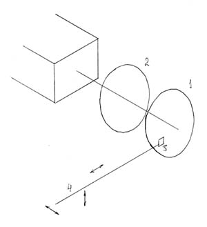
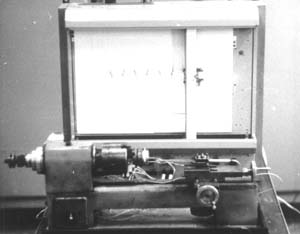
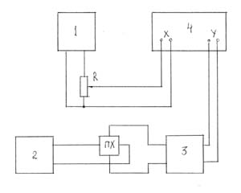
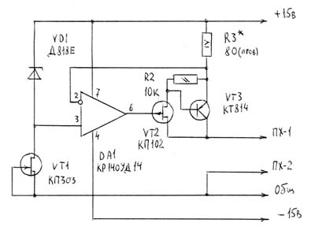
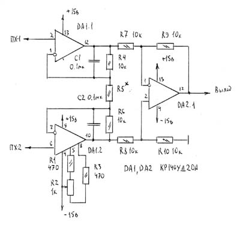
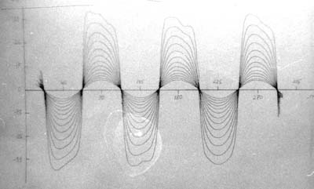

Установка измерения и
контроля топографии
магнитного поля многополюсных магнитных систем
для бесконтактных двигателей постоянного тока
Введение
Основным элементом бесконтактных двигателей постоянного тока (БДПТ), широко применяемых в различных областях экономики, являются многополюсные постоянные магниты и многополюсные магнитные системы (МПМС). Оптимизация МПМС является центральным вопросом усовершенствования БДПТ. При этом до настоящего времени остается на стадии постановки задачи ряд серьезных проблем. Во-первых, не выработано единое мнение о том, какой тип магнитной системы - с осевым или радиальным магнитным рабочим зазором (и, соответственно, направлением намагничивания кольцевого магнита) является предпочтительным. Отсутствует достаточно глубокий анализ эффективности магнитных систем разных видов, слабо изучено распределение поля многополюсных магнитов в его неразрывной связи с параметрами и конструкцией обмоток возбуждения. Во-вторых, недостаточно изучены технико-экономические вопросы выбора материала постоянного магнита и технологии изготовления элементов ротора. Для выбора путей решения этих проблем необходимо иметь соответствующую контрольно-измерительную аппаратуру. Она должна позволять подробно изучать распределение поля в рабочем объеме МПМС. Качество МПМС БДПТ всех видов определяется не только средним значением индукции рабочего поля, но и тем, насколько конструкция отвечает своему главному назначению - созданию заданного закона распределения поля. Для БДПТ значение индукции и закон ее распределения должны быть выдержаны с высокой степенью точности, так как от этого зависят основные характеристики устройства. Поэтому контроль топографии поля таких систем является неотъемлемой частью их опытно-конструкторской разработки и технологического процесса производства. Информация о топографии рабочего поля на этапе конструкторской отработки позволит получить заметный выигрыш за счет снижения массы магнитного материала или за счет упрощения конструкции. При измерении координатных составляющих магнитной индукции в рабочем объеме следует правильно выбрать траекторию движения измерительного зонда с первичными преобразователями индукции относительно координатных линий МПМС. Магнитное поле многополюсных систем БДПТ является осесимметричным, поэтому для оценки его асимметрии следует измерить составляющие магнитного поля в функции цилиндрических координат.
Техническая реализация
При снятии топографии поля по точкам во всем объеме МПМС время измерения и построения картины изменения составляющих поля оказывается слишком большим. В целях его экономии регистрацию информации было решено производить на двухкоординатном самопишущем потенциометре. Для обеспечения полных измерений топографии поля как в рабочем объеме МПМС, так и за его пределами (поля рассеяния), была выбрана кинематическая схема, представленная на рис. 1. Данная схема позволяет проводить измерения при повороте МПМС вокруг своей оси (совпадающей с осью вала БДПТ) при любом положении первичного измерительного преобразователя на линии радиуса МПМС и на различных расстояниях от поверхности системы.

Рис. 1. Кинематическая схема измерительной системы: 1 - стол для образца с отсчетом угла поворота; 2 - круговой потенциометр; 3 - измерительный зонд (преобразователь Холла); 4 - трехкоординатный стол перемещения зонда.
Конструктивно схема измерений топографии магнитного поля реализована на основе малогабаритного токарного станка ("Универсал"). В шпинделе станка зажимается прецизионный потенциометр, к которому крепится исследуемая МПМС. В суппорте устанавливается измерительный зонд, выполненный на основе датчика Холла [2]. Таким образом обеспечиваются три степени свободы измерительной системы, т. е. имеется возможность устанавливать зонд на заданном расстоянии от поверхности МПМС, на заданном радиусе от ее оси и задавать угол поворота. Внешний вид измерительной системы показан на рис. 2.

Рис. 2. Внешний вид измерительной системы.
Структурная схема установки для измерения топографии рабочего поля представлена на рис. 3.

Рис. 3. Структурная схема установки: 1 - источник стабилизированного напряжения; 2 - источник стабилизированного тока; 3 - масштабирующий усилитель; 4 - двухкоординатный самопишущий потенциометр.
Установка включает в себя источник стабилизированного напряжения 1. Это напряжение подается на прецизионный потенциометр R, выход которого подключен к входу X двухкоординатного самопишущего потенциометра (типа ПДП-4 или аналогичного). Движок потенциометра R согласно кинематической схеме рис. 1 связан с поворотной системой, на которой соосно укреплен испытуемый многополюсный кольцевой постоянный магнит. Потенциометр R с номинальным сопротивлением 5.1 кОм имеет прецизионное исполнение с отклонением от линейности менее 0.1 %. Таким образом, выходное напряжение потенциометра оказывается пропорциональным углу поворота системы с достаточно высокой степенью точности. Источник стабилизированного напряжения 2 и масштабирующий усилитель 3 обеспечивают функционирование измерительного канала индукции на малогабаритном преобразователе Холла ПХ, выход которого подключен к входу Y самописца. Таким образом, система в целом обеспечивает регистрацию выбранной компоненты поля в зависимости от координаты. Перемещение измерительного зонда по трем независимым координатам согласно кинематической схемы рис. 1 позволяет получать полную картину топографии поля вблизи испытуемого образца. Анализ погрешности измерительных каналов с учетом погрешностей самого преобразователя Холла показывает, что для полной реализации метрологических характеристик выбранного ПХ необходимо обеспечить заданное значение тока питания с погрешностью не более 0.2 % и с такой же величиной температурно-временной стабильности и погрешность усиления сигнала ПХ не более 0.5 %. Исходя из того, что класс регистратора составляет 0.2 %, и с учетом имеющихся схемных разработок стабилизаторов тока и усилителей напряжения, целесообразно выполнить стабилизатор тока и усилитель с запасом точности порядка 0.1 ... 0.2 %. Принципиальная схема источника тока приведена на рис. 4.

Рис. 4. Принципиальная схема источника тока для питания датчика Холла.
Источник тока собран на операционном усилителе (ОУ). Для повышения выходной мощности ОУ применен составной каскад на полевом и биполярном транзисторах. Источник тока управляется напряжением, снимаемым со стабилитрона, который позволяет получить опорное напряжение с высокой температурной стабильностью. Принципиальная схема масштабируемого усилителя приведена на рис. 5. Он собран по обычной схеме инструментального усилителя.

Рис. 5. Принципиальная схема масштабирующего усилителя
Графические возможности измерительной системы продемонстрированы на фотографии (рис. 6), где приведена зависимость магнитной индукции от угла поворота для аксиально намагниченного кольцевого магнита из феррита бария при разных расстояниях датчика от его поверхности. Намагничивание магнита производилось с помощью установки импульсного намагничивания [4] в составе однополярного генератора мощных импульсов тока [1] и 6-полюсного намагничивающего устройства [5].

Рис. 6. Топография поля 6-полюсной магнитной системы (аксиально намагниченный кольцевой магнит).
Ссылки:
25.02.2004
09.09.2005
26.01.2006
23.06.2010
Альтернативные источники
энергии
Компьютеры и
Интернет
Магнитные поля
Механотронные системы
Перспективные
разработки
Электроника и
технология